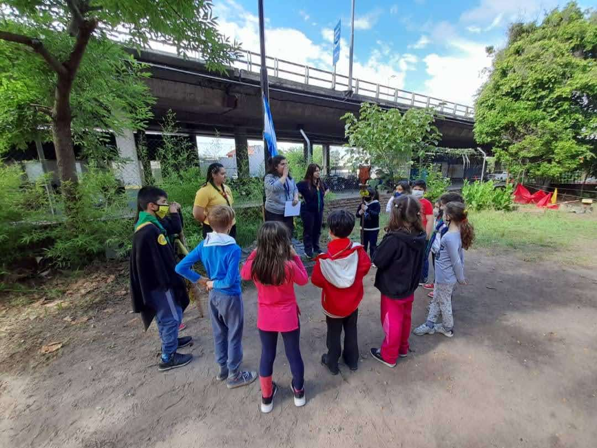
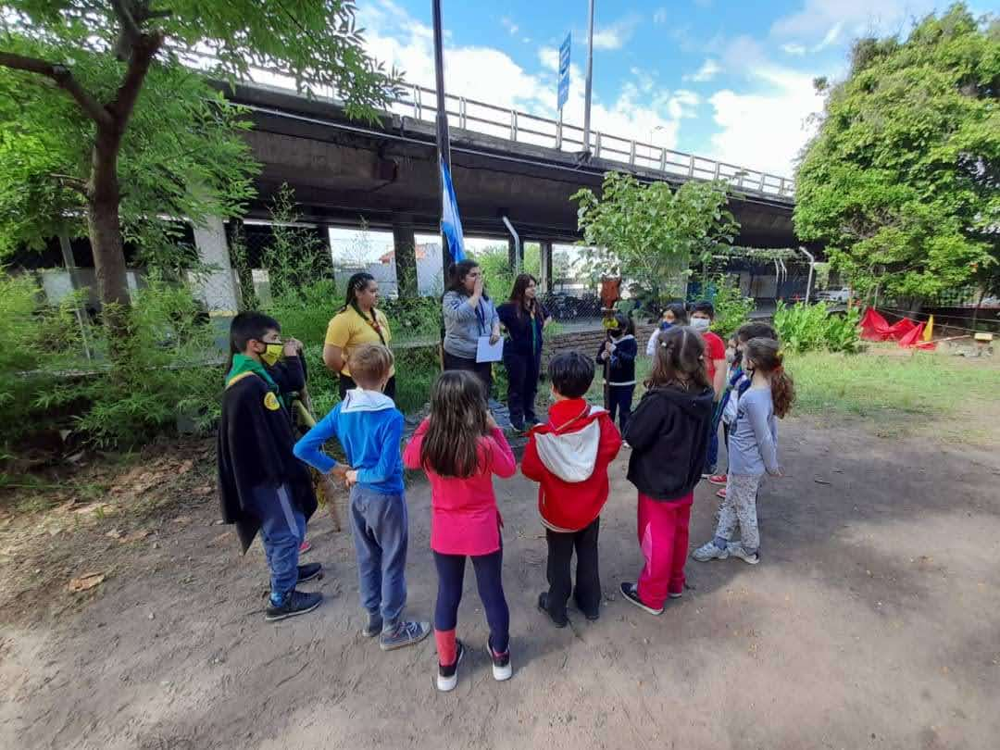

La Manada está compuesta por niños y niñas de 7 a 11 años que se suman Sábado a Sábado para jugar, aprender y divertirse!
Los juegos se dan en el marco del Libro de las Tierras Vírgenes de Rudyard Kipling (o mejor conocido como el Libro de la Selva). Los chicos juegan a ser lobatos y lobatas y a su vez los educadores juegan a ser Viejos Lobos (lobos mayores). Bajo el lema Siempre Mejor, se enseñan valores como compañerismo, respeto por la vida y la naturaleza, sinceridad, solidaridad, valor y alegría. Esto es para que día a día, lobatos y lobatas se autosuperen a ellos mismos!
 
